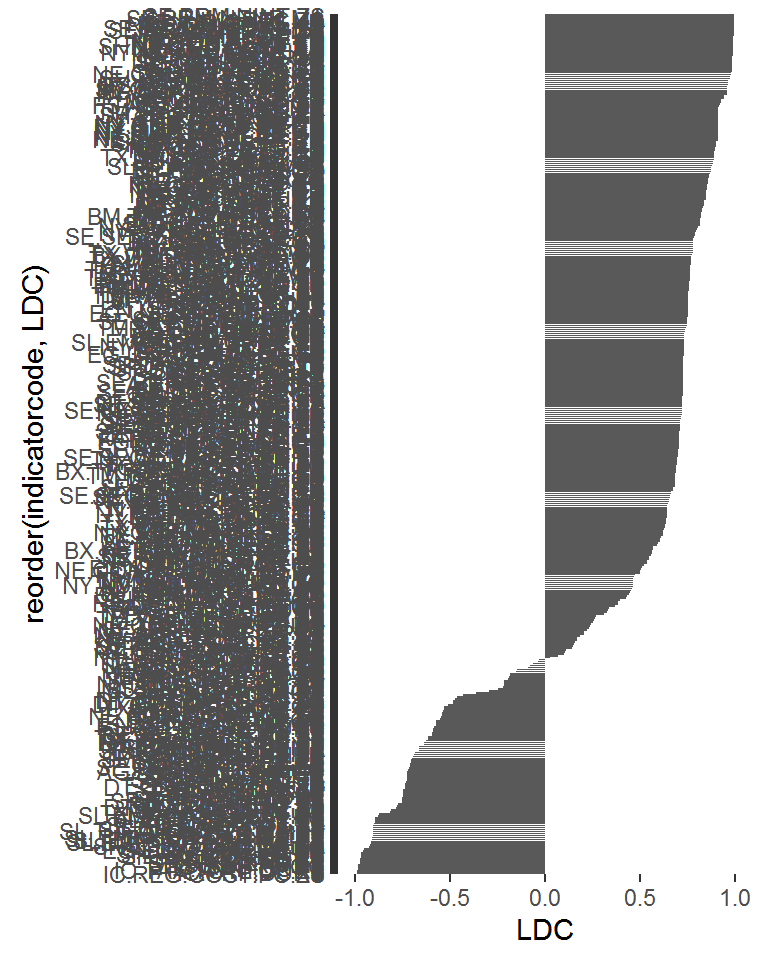
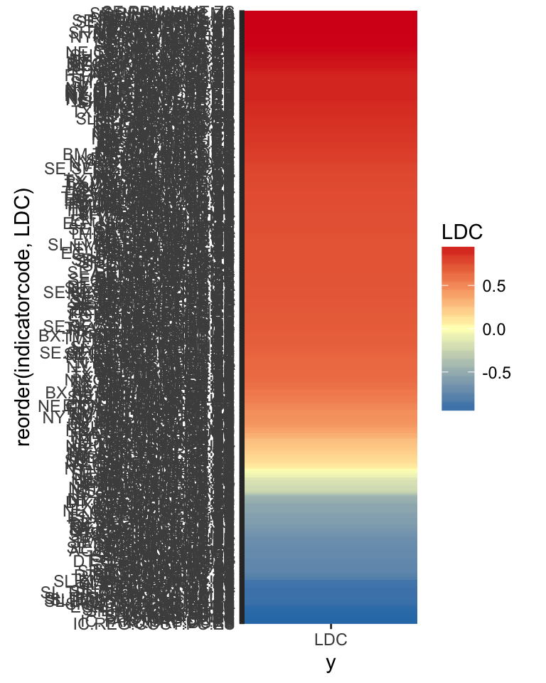
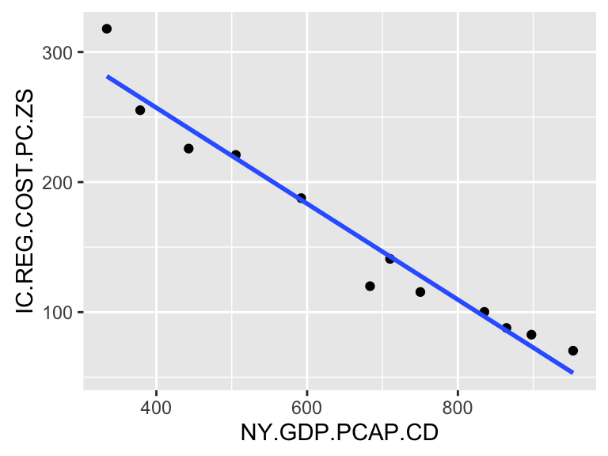
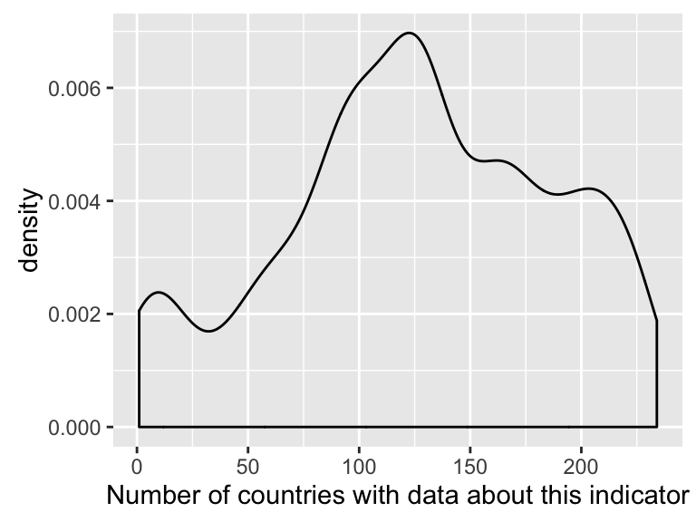

Econ Data Exploration
7 March, 2016
Introduction
This analysis is a brief exploration of the World Economic Indicators dataset downloaded from http://datacatalog.worldbank.org/. It’s to show feasibility that this dataset is actually analyzable and therefore suitable for our Econ Data competition (http://www.slideshare.net/TonyHui3/big-data-big-impact-info-session-slides)
Load data
all_data <- fread("WDI_Data.csv", header = T, check.names = TRUE, data.table = FALSE) %>%
setnames(gsub(" ", "", colnames(.)) %>% tolower()) %>% tbl_df()##
Read 27.0% of 333560 rows
Read 54.0% of 333560 rows
Read 83.9% of 333560 rows
Read 333560 rows and 60 (of 60) columns from 0.151 GB file in 00:00:05all_data_long <- all_data %>%
select(-countryname, -indicatorname) %>%
gather(key = year, value = value, -countrycode, -indicatorcode) %>%
filter(!is.na(value))DT::datatable(all_data[sample(1:nrow(all_data), size = 10),], style = "bootstrap", rownames = FALSE, fillContainer = TRUE)Format data for correlations
- Remove variables where latest measurement isn’t 2012 or later
- Remove variables with less than 10 years of data, or variables with 0 standard deviation
- Only grab datapoints where the data lies between the GDP datapoints
- Results in a matrix, where each row represents one year
ldc_data_long <- all_data_long %>%
filter(countrycode == "LDC")
# Get earliest and latest timepoint for GDP data, removing the rest
ldc_data_daterange <- ldc_data_long %>%
filter(indicatorcode == gdp) %>%
summarize(min = min(year), max = max(year))
ldc_data_daterange## # A tibble: 1 x 2
## min max
## <chr> <chr>
## 1 1980 2014# Get variable names to include
good_indicators <- ldc_data_long %>%
group_by(indicatorcode) %>%
filter(n() > 10, sd(value) > 0, max(year) >= 2012) %>%
dplyr::select(`indicatorcode`) %>%
unique()
# Transform into matrix
ldc_data_matrix <- ldc_data_long %>%
filter(year >= ldc_data_daterange$min, year <= ldc_data_daterange$max) %>%
filter(indicatorcode %in% good_indicators$indicatorcode) %>%
spread(key = indicatorcode, value = value) %>%
select(-c(1:2))
ldc_data_matrix[1:6,1:6] %>% DT::datatable(fillContainer = TRUE)Correlate each indicator with NY.GDP.PCAP.CD of LDC
# correlate
ldc_cor_matrix <- cor(x = as.matrix(ldc_data_matrix[,gdp]), y = as.matrix(select(ldc_data_matrix, -matches(gdp))), use = "pairwise.complete", method = "spearman")
ldc_cor_df <- as.data.frame(ldc_cor_matrix) %>% t %>% data.frame() %>%
tibble::rownames_to_column("indicatorcode") %>%
rename(LDC = NY.GDP.PCAP.CD) %>%
arrange(desc(abs(LDC)))
ldc_cor_df %>% head## indicatorcode LDC
## 1 IC.REG.COST.PC.ZS -0.9930070
## 2 SE.PRM.NINT.ZS 0.9930070
## 3 SE.PRM.NENR.MA 0.9929825
## 4 SH.HIV.ARTC.ZS 0.9928571
## 5 NE.CON.GOVT.KD 0.9912088
## 6 NE.IMP.GNFS.KD 0.9912088highest_cor <- ldc_cor_df$indicatorcode[1]plot this
Don’t worry about y axis labels - the point is to show that some are positive and some are negative
ldc_cor_df %>%
ggplot(aes(reorder(indicatorcode, LDC), LDC)) +
geom_bar(stat = "identity") +
coord_flip()
One can also represent the height of the bar with color - in this case, higher bar = higher correlation = more red
ldc_cor_df %>%
ggplot(aes(reorder(indicatorcode, LDC), "LDC", fill=LDC)) +
geom_bin2d() +
scale_fill_gradient2(low = "#2c7bb6", mid = "#ffffbf", high = "#d7191c") +
coord_flip()
“Visually” confirm the highest correlation
IC.REG.COST.PC.ZS is Cost of business start-up procedures
test <- "IC.REG.COST.PC.ZS"
ldc_confirm <- ldc_data_long %>%
filter(indicatorcode == gdp | indicatorcode == test) %>%
spread(key = indicatorcode, value = value) %>%
filter(complete.cases(.)) %>%
as.data.frame()
ggplot(ldc_confirm, aes(x = ldc_confirm[,gdp], y = ldc_confirm[,test])) +
xlab(gdp) +
ylab(test) +
geom_point() +
geom_smooth(method = "lm", se = F)
Scale computation to all countries
# Get earliest and latest timepoint for GDP data, removing the rest
all_data_daterange <- all_data_long %>%
group_by(countrycode) %>%
filter(indicatorcode == gdp) %>%
summarize(min_year = as.numeric(min(year)), max_year = as.numeric(max(year))) %>%
mutate(range = max_year - min_year) %>%
filter(range >= 10)
# Merge the date range information into data frame
date_data_long <- inner_join(all_data_long, all_data_daterange)## Joining, by = "countrycode"# Find indicators where year is within 2 years of most recent GDP reading, and there is non-zero standard deviation, and there is more than 10 observations
good_indicators <- date_data_long %>%
group_by(countrycode, indicatorcode) %>%
filter(max(year) >= max(max_year)-2) %>%
filter(n() >= 10, sd(value) > 0) %>%
filter(year <= max_year, year >= min_year)
# Find indicators that a lot of countries have data for
high_freq_indicators <- good_indicators %>%
ungroup() %>%
select(countrycode, indicatorcode) %>% unique() %>%
group_by(indicatorcode) %>%
tally()
qplot(high_freq_indicators$n, geom="density") +
xlab("Number of countries with data about this indicator")
# Find indicators with support in lots of countries
high_freq_indicators_list <- (high_freq_indicators %>% filter(n > 150))$indicatorcode
great_indicators <- good_indicators %>%
filter(indicatorcode %in% high_freq_indicators_list)
high_freq_countries <- great_indicators %>% select(countrycode, indicatorcode) %>% unique() %>% group_by(countrycode) %>% tally()
qplot(high_freq_countries$n, geom="density") +
xlab("Number of indicators each country has data for")
high_freq_countries_list <- (high_freq_countries %>% filter(n > 300))$countrycode
great_indicators_and_countries <- great_indicators %>%
filter(countrycode %in% high_freq_countries_list)
# Transform into matrix
all_data_spread_matrix <- great_indicators_and_countries %>%
spread(key = indicatorcode, value = value) %>%
select(-c(2:5))
# correlate
all_countries_cor_matrix <- all_data_spread_matrix %>%
group_by(countrycode) %>%
do(cor(x = as.matrix(.[,gdp]), y = as.matrix(select(., -matches(gdp), -countrycode)), use = "pairwise.complete", method = "spearman") %>% as.data.frame())
# Turn into matrix for pheatmap
rownames(all_countries_cor_matrix) <- all_countries_cor_matrix$countrycode
all_countries_cor_heatmap <- all_countries_cor_matrix %>% ungroup %>% select(-countrycode) %>% data.matrix()Plot a heatmap
pheatmap(all_countries_cor_heatmap, cluster_rows = T, cluster_cols = T,
color = colorRampPalette(c("#2c7bb6", "#ffffbf", "#d7191c"))(21))